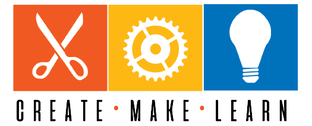

<nav class="navbar">
    <div class="nav-container">
        <div class="nav-logo">
            
        </div>

        <ul class="nav-menu" id="navMenu">
            <li><a href="index.html" class="nav-link">Home</a></li>


            <li><a href="https://createmakelearn.blogspot.com/" class="nav-link">Blog</a></li>

            <li><a href="cml_residencies.html" class="nav-link active">Residencies</a></li>

            <li><a href="#workshops" class="nav-link">Workshops & PD</a></li>
           
            <li><a href="cml_connect.html" class="nav-link">Let's Connect</a></li>


            

        </ul>
        <button class="nav-toggle" id="navToggle">☰</button>
    </div>
</nav>